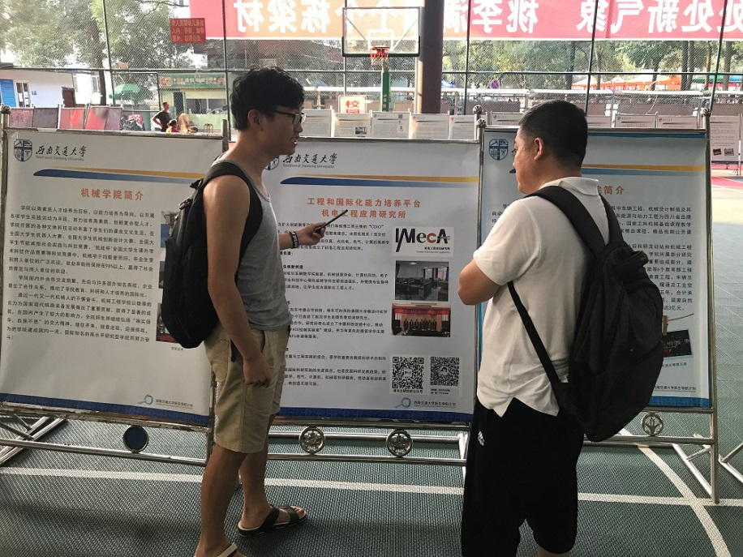
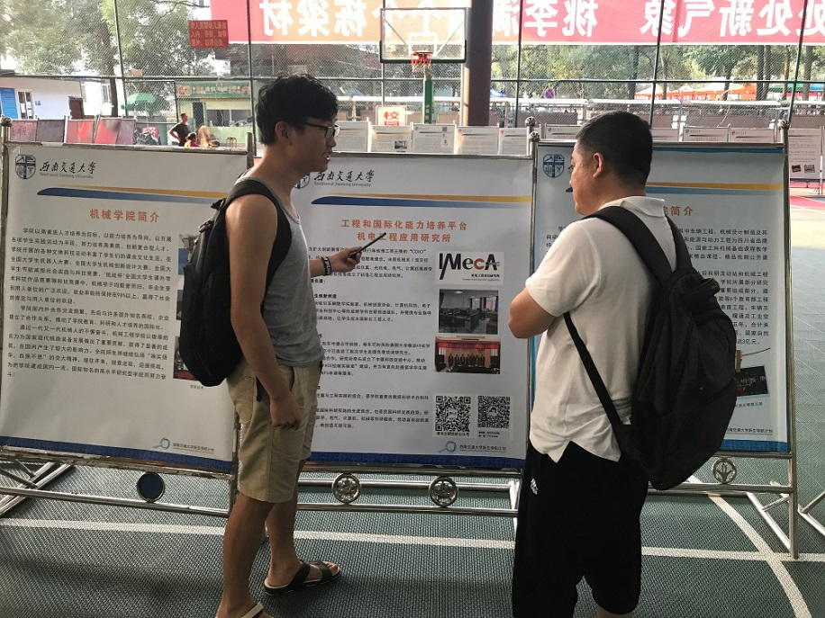
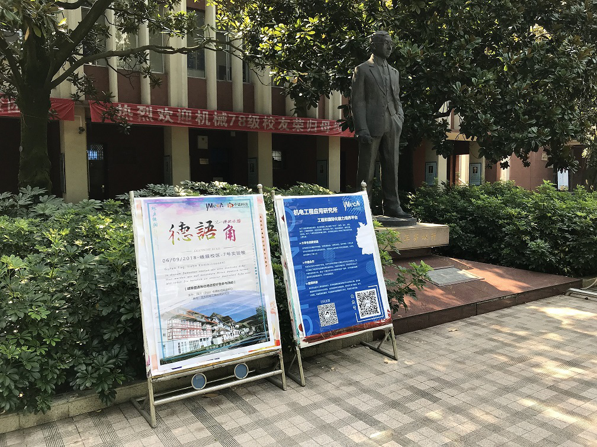

中德科促在交大峨眉校区顺利开展2018年秋季迎新工作
作者：赵杨
时间：2018-09-03 11:30:57 | 来源：本站
2018年8月下旬，四川（乐山）中德科技促进中心交大工作组对交大峨眉校区2018级迎新工作提前进行具体部署， 决定通过持续开展“校区与德国大学合作展板宣传”、“德语角系列活动”、“唐阳副教授留学德国主题报告会”、 “新一届德语基础班招生”、“机电工程应用研究所公众号推送”等活动欢迎2018级入校新生。
 

8月29日至8月31日，2018级新生陆续进校报到。中德科促工作人员提前将峨眉校区与德国 Ostfalia 大学合作展板放置于迎新操场，并积极向学生及学生家长介绍峨眉校区中德合作 的历史。
此外，中德科促工作人员提前将德语角主题活动的海报张贴于机械系教学楼前。 9月6日（即开学第一周的周四）下午， 中德科促将面向校区全体同学开展德语角主题活动， 在校区营造学习德国语言、文化的浓厚氛围，增强同学们学习德语的兴趣，提高同学们德语应用的水平。
在后续的迎新活动中，中德科促还将持续开展“唐阳副教授留学德国主题报告会”、“新一届德语班招生”等系列活动。